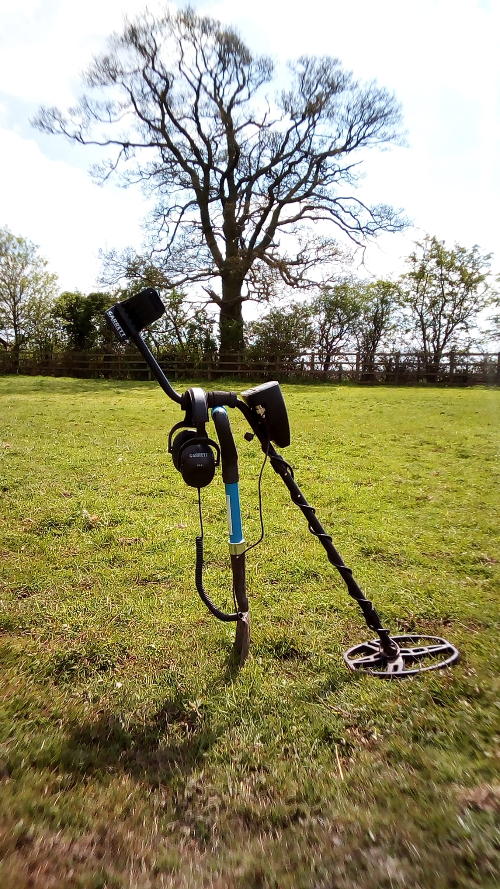

Gallery
Life in the field. People, places and moments.
A glimpse of club days, local landscapes and some of the discoveries made while detecting around Hampton In Arden and the surrounding area.




Gallery
A glimpse of club days, local landscapes and some of the discoveries made while detecting around Hampton In Arden and the surrounding area.
